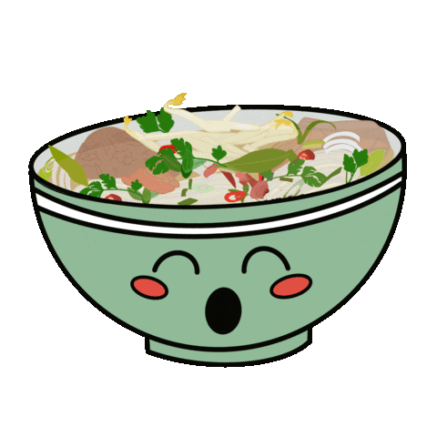

Pho Recipe

Description
Pho is a popular Vietnamese soup known for its flavorful broth and rice noodles. Pho is a versatile dish,
and you can customize it by adding other ingredients like beef meatballs or tendon.
This recipe provides a basic foundation, but feel free to adjust and experiment to
suit your taste. Enjoy the fragrant and comforting flavors of pho, and savor the combination
of aromatic herbs, tender beef, and rich broth that make it a beloved Vietnamese culinary delight.
Ingredients
Here are the main ingredients used in this dish:
- Beef Bones
- Onions
- Ginger
- Cloves
- Rice Noodles
- Cooked Beef
- Mint
- Cilantro
- Chili peppers
- Lime Wedges
- Siracha & Hoisin Sauce (optional)
These ingredients come together to create the distinctive flavors and textures of a classic pho soup.
Steps
Here are the steps to create the perfect pho dish:
- In a large stockpot, add beef bones, sliced onions, and sliced ginger.
- Place cinnamon sticks, star anise, cloves, coriander seeds, and fennel seeds in a spice bag or wrap them in cheesecloth, and add them to the pot.
- Fill the pot with water, enough to cover the ingredients, and bring it to a boil.
- Reduce the heat to low and let the broth simmer for about 4 hours, skimming off any impurities that rise to the surface.
- After simmering, strain the broth to remove the solids, and return the broth to the pot.
- Season the broth with salt and sugar to taste, adjusting the flavors as needed.
- Prepare the rice noodles according to the package instructions.
- Slice the cooked beef thinly and set it aside.
- To serve, divide the cooked rice noodles among individual bowls.
- Top the noodles with the sliced cooked beef.
- Ladle the hot broth over the noodles and beef.
- Serve the pho with a plate of bean sprouts, Thai basil, cilantro, mint, lime wedges, and thinly sliced chili peppers on the side.
- Optionally, provide hoisin sauce and Sriracha sauce for individuals to add to their taste.
- AND VOILA!
Enjoy your homemade pho with its aromatic broth, tender beef, and flavorful toppings!
